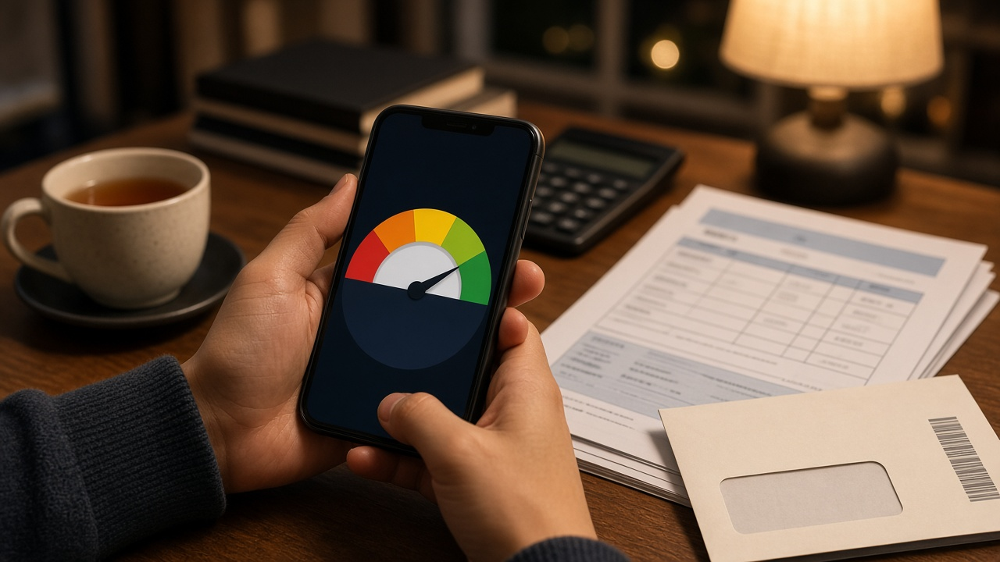

신용점수 올리기, 통신비와 건강보험료 납부내역 가점은 한 번 내고 끝이 아니에요 연체 10만원 5영업일 기준까지 정리

대출 금리를 알아보거나 카드를 새로 만들려다 생각보다 낮은 신용점수를 보고 당황한 적 있으신가요. 연체한 적도 없는데 점수가 왜 이 정도인지, 통신비 납부내역을 내면 정말 오르는지 궁금해하는 분이 많아요. 신용점수는 몇 가지 정해진 요소로 매겨지고, 그중 일부는 내가 직접 챙길 수 있는 부분이에요. 오늘은 나이스평가정보와 금융감독원 안내를 바탕으로 신용점수를 올리고 지키는 데 실제로 쓸모 있는 내용만 정리해 볼게요.
신용점수는 무엇으로 매겨지는지부터 알아 두면 좋아요
신용점수는 신용평가회사가 내 신용정보를 통계적으로 분석해서, 앞으로 1년 안에 90일 이상 장기연체 같은 일이 생기지 않을 가능성을 1점부터 1000점까지 숫자로 나타낸 거예요. 우리나라에서는 나이스평가정보와 코리아크레딧뷰로 두 곳의 점수가 주로 쓰이고, 흔히 나이스와 KCB라고 불러요.
나이스평가정보가 밝힌 주요 평가 요소는 상환이력, 현재 부채 수준, 신용거래 기간, 신용 형태, 그리고 비금융과 마이데이터 정보예요. 쉽게 말해 제때 갚아 왔는지, 지금 빚이 얼마나 되는지, 금융 거래를 얼마나 오래 해 왔는지, 카드를 어떻게 쓰는지, 공과금 같은 납부를 성실히 해 왔는지를 함께 본다는 뜻이에요.
많이들 걱정하는 내 점수 조회는 점수에 영향을 주지 않아요. 금융감독원은 2011년 10월부터 신용점수 조회 사실을 신용평가에 반영하지 않도록 바뀌었다고 안내하고 있어요. 그러니 점수가 궁금하면 부담 없이 확인해도 괜찮아요.
통신비와 건강보험료 납부내역을 내면 가점을 받을 수 있어요
금융 거래가 많지 않은 사회초년생, 주부, 프리랜서라면 비금융 납부실적 제출이 가장 먼저 해 볼 만한 방법이에요. 나이스평가정보는 고객이 등록한 국민연금, 건강보험료, 통신요금, 공과금, 아파트관리비 납부내역과 소득금액증명 같은 증빙소득이 개인신용평가에 가점으로 반영될 수 있다고 안내해요. 예금 같은 저축성 금융자산 거래내역을 등록해도 긍정적으로 반영될 수 있다고 해요.
방법은 어렵지 않아요. 나이스지키미나 올크레딧 누리집이나 앱에서 본인인증을 한 뒤 신용점수 올리기나 마이데이터 등록 메뉴에서 정보 제공에 동의하면 납부내역이 연동돼요. 공공기관이나 통신회사에서 납부실적 자료를 발급받아 우편, 팩스, 방문으로 내는 방법도 있어요.
다만 조건이 있어요. 정책브리핑에 실린 나이스지키미 안내를 보면 최근 3개월 이내에 6개월 이상 성실하게 낸 자료가 있을 때 도움이 될 수 있고, 같은 달에 이미 반영했거나 변동이 없으면 점수가 그대로일 수 있다고 해요. 금융감독원도 지금 연체 중이라면 가점 대상에서 빠질 수 있다고 설명하고 있어요.
한 번 받은 가점은 시간이 지나면 사라질 수 있어요
여기서 많은 분이 놓치는 부분이 있어요. 납부내역 가점은 한 번 내면 계속 유지되는 게 아니에요. 금융감독원이 소개한 민원 사례 가운데 연체도 없는데 점수가 떨어졌다는 내용이 있었는데, 확인해 보니 비금융 성실납부 가점의 활용 기간이 지난 것이 원인이었어요. 금융감독원은 이 활용 기간이 통상 제출 후 최대 1년이라고 안내했어요.
금융회사들의 소비자 안내에서도 성실납부 자료를 6개월마다 꾸준히 제출해야 가점 효력이 유지된다고 설명하고 있어요. 그래서 대출이나 카드 발급을 앞두고 있다면 몇 달 전에 미리 납부내역을 다시 연동해 두는 습관이 좋아요.
반대로 자료를 냈다고 점수가 반드시 오르는 것도 아니에요. 신용평가회사마다 반영 방식이 다르고, 이미 신용 거래 이력이 충분한 사람은 변화가 작을 수 있어요. 내 점수 화면에서 제출 전후를 직접 비교해 보는 게 가장 정확해요.
점수를 깎는 건 연체, 잦은 현금서비스, 습관적인 할부예요
점수를 올리는 것만큼 깎이지 않게 지키는 것도 중요해요. 나이스평가정보 기준으로 연체금액 10만 원 미만이거나 연체기간 5영업일 미만인 정보는 신용평가에 반영되지 않아요. 5영업일 이상, 10만 원 이상 연체되면 금융회사가 그 정보를 신용평가회사에 넘기는데, 30일 미만이나 30만 원 미만의 일시적 소액 연체는 점수에 쓰지 않는다고 해요. 하지만 금융감독원은 최근 5년 안에 연체 이력이 있는 사람은 소액 단기 연체도 평가에 쓰일 수 있다고 안내하고 있어요.
연체가 길어지면 회복도 오래 걸려요. 90일 이상 장기연체 중이면 일반적으로 350점 이하이고, 장기연체 기록은 해제된 뒤에도 최장 5년 동안 점수에 영향을 줄 수 있어요. 국세나 지방세, 과태료 같은 세금 체납 정보도 갚은 뒤 3년간 반영될 수 있으니 고지서를 미루지 않는 게 좋아요. 이미 연체가 여러 건이라면 오래된 것부터 갚는 게 유리하다고 KB국민은행도 설명해요.
카드 쓰는 습관도 점수에 들어가요. 현금서비스를 자주 쓰면 부정적으로 반영될 수 있고, 습관적으로 할부를 길게 쓰는 것도 일시불보다 불리하게 평가될 수 있어요. 신용카드나 체크카드를 연체 없이 꾸준히 쓰는 실적은 오히려 긍정적으로 반영돼요. 카드를 여러 장 만들거나 해지하는 것 자체는 점수에 영향이 없다고 나이스평가정보는 밝히고 있어요.
내 점수 확인과 이의제기는 무료로 할 수 있어요
나이스지키미와 올크레딧에서는 법에 따라 1년에 세 번 신용점수를 무료로 볼 수 있어요. 1월부터 4월, 5월부터 8월, 9월부터 12월까지 기간마다 한 번씩이고, 지나간 기간의 횟수는 쌓이지 않아요. 10월 기준으로는 올해 마지막 회차 기간이라, 아직 조회하지 않았다면 연말 전에 한 번 확인해 보셔도 좋겠어요. 내 대출과 연체, 카드 발급 내역은 한국신용정보원의 본인신용정보 열람서비스에서도 무료로 볼 수 있어요.
두 회사 점수가 꽤 다르게 나오는 경우도 있어요. 금융감독원은 신용평가회사마다 쓰는 정보의 범위와 반영 비중이 달라서 그럴 수 있다고 설명해요. 점수가 이상하다고 느껴지면 먼저 해당 신용평가회사 고객센터에서 산출 근거를 확인하고, 그래도 납득되지 않으면 금융감독원 민원센터에 이의를 제기할 수 있어요.
한 가지만 기억해 두면 좋아요. 신용점수가 올랐다고 대출 한도나 금리가 자동으로 좋아지는 건 아니에요. 은행과 카드사는 자체 심사 기준으로 소득, 부채, 거래 실적을 함께 보거든요. 당장 갚기가 어려운 상황이라면 신용회복위원회 누리집에서 신속채무조정 지원 대상인지 먼저 확인해 보시길 권해요.
참고 자료 나이스평가정보 개인신용평점 주요 평가요소 안내, 금융감독원 개인신용평가 관련 소비자 유의사항, 금융감독원 무료신용조회 안내, 대한민국 정책브리핑 대안신용평가 기사 2026년, 금융위원회 신용평가체계 개편 TF 2026년 1월, KB국민은행 KB의 생각 신용점수 오해 정리
태그 신용점수올리기 신용점수관리 비금융정보제출 통신비납부내역 건강보험료납부내역 나이스지키미 올크레딧 무료신용조회 신용점수연체기준 신용점수가점